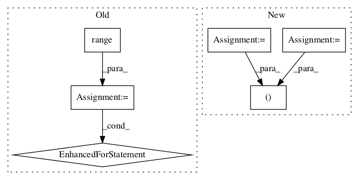

20f388cfe01635a2073723c5c4ffd6dd7a87fbb2,tensorflow_hub/tools/module_search/utils.py,,knn_errorrate,#Any#Any#Any#Any#,104

Before Change
cnt = 0
for i in range(np.shape(d)[0]):
cnt_i = 0
for j in range(k):
if y_test[i] != y_train[indices[i, j]]:
cnt_i += 1
if cnt_i >= k / 2.0:
cnt += 1
return float(cnt) / np.shape(d)[0]
After Change
// Get max vote
labels = y_train[indices[i, :k]]
keys, counts = np.unique(labels, return_counts=True)
maxkey = keys[np.argmax(counts)]
if y_test[i] != maxkey:
cnt += 1
In pattern: SUPERPATTERN
Frequency: 3
Non-data size: 6
Instances
Project Name: tensorflow/hub
Commit Name: 20f388cfe01635a2073723c5c4ffd6dd7a87fbb2
Time:
Author: null
File Name: tensorflow_hub/tools/module_search/utils.py
Class Name:
Method Name: knn_errorrate
Project Name: shubhomoydas/ad_examples
Commit Name: bfc36258ed16fe1e973b22c88f891141f87220d8
Time:
Author: null
File Name: python/graph/simple_gcn.py
Class Name: SimpleGCN
Method Name: _fit
Project Name: tensorflow/hub
Commit Name: 20f388cfe01635a2073723c5c4ffd6dd7a87fbb2
Time:
Author: null
File Name: tensorflow_hub/tools/module_search/utils.py
Class Name:
Method Name: knn_errorrate_loo